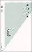

31 | 30 29 28 27 25 24 | 21 20 19 18 17 | 15 14 13 12 11 10
| 9 7 6
5 4 3 |
2 1
31-12 (maandag)
-
オランダの医療システムはよく分からん…
-
ホームドクターを通さないと何も出来ない仕組みで、
救急車を呼んでも、その隊員が一存で入院させることは
(本当の緊急時では無い限り?)できないのだそうだ
- 薬局は、市内の大きい所かどこかは 24
時間開いているらしい (知らなかった)
- 今日の雪ダルマ
-
21世紀一年目も終る。
- 今年はバタバタした一年だった。
結局落ち着けなかったので、来年もバタバタするのだろうなぁ
- そういうのに向いていない性格だが、仕方無い
-
新年とともに小さめの花火があちこちで上がる
-
昨年の事故のためか、オランダでは花火に規制があるようだが、
ドイツ、ベルギーから買えるので、個人的に上げているらしい
30-12 (zondag)
29-12 (zaterdag)
28-12 (vrijdag)
-
映画 The Horse
Whisperer を見る
- アメリカに居たとき TV CM で宣伝していた。
つまんかかった
- 実はずーっと、Kristin Scott Thomas が
Major Kira だとばかり思っていた (調べたら
Kira は Nana Visitor であった。 cf.こことか)
27-12(donterdag)
26-12 (woensdag)
- 自宅にて
-
[phys]BIE project
- TeX ノート改訂、
足りない計算をして、現状でまとめる
- on-line で Cauchy principal value と
Hadamard finite-part 関連の 文献を探す
25-12 (dinsdag)
24-12 (maandag)
23-12 (zondag)
21-12 (vrijdag)
-
[phys]BIE project
-
解析計算、仕切り直し(ベクトル解析の演習書を参考)
-
今日で仕事納めとする
20-12 (donterdag)
19-12 (woensdag)
-
鶴田真由、アフガンを行く パミール高原をキャラバン
@ asahi.com (local copy)
-
まぁ朝日新聞がテレビ朝日の番組宣伝をしているだけなのだが、
以下のコメントにうなった(本人が本人の気持ちを言っているのだろうか…)
-
「たとえば祈ることで、人間は何かに生かされていることを忘れないように
している世界もある。祈ることもなくなった私たちは、自分の力ではどうにも
ならないことが、この世にあることをどうやって思い出せばいいのか……。
そんなことを感じました」
- 後記: 30-12
にアクセスして見たらもうない。 だからやっぱり
local copy をとるべきだ。 (culture/update
はどんどん消すのか?)
- 後記2: tsurutamayu.com、 日記
発見。 ファンになってしまった (10-2-2002
記)
- ←
9/30/2003,
12/20/2002,
8/20/2002,
3/1/2002
-
[phys]BIE project
-
bubble お勉強、その４
-
Leal の本読み
- 積分方程式の下りを抜出し(Chp.5 B)
- Rayleigh-Plesset
に関する記述がある事を発見 (Chp.6 D --
特に p.327
から粘性を無視することに関する議論)
- あと、leen が以前 (27-11-2001)
教えてくれた話しが Chp.5 A に
- point 近似で具体的に詰めてみる…… が
self part が U-F 以外で 0 になる?
うなるが、結論でず
-
縲継ressure
moments」フォルダのノートを見かえす
- 何と、ほとんど定式化を終えている?
(cf.5-6-1998)
-
ただ、この時点ではきちんと物理を理解していないような気がする
18-12 (dinsdag)
-
停電があり、coffee time まで仕事にならず
-
と言っても、今ちょっと勉強モードなので、あまり関係ないが
-
物理学会誌
12 月号届く
-
seminar
- Arthur van Bilsen " Fountains and coarsening in a
granular gas: simulation vs. experiment "
- Renate Heijmans " Raindrop distribution in turbulent
fields near the surface "
- 研究室のクリスマスパーティ (Kerstborrel)
-
[phys]BIE project
-
bubble お勉強、その３
- R.Mei and C.J.Lawrence, JFM 325 (1996)
pp.79-111 を get; Lovalenti より、しかし
sink (source) 絡みの話しとしても興味深い
- 右往左往しているが、全然だめ
-
andrea と少し話す(Kerstborrel にて)
- Bjerknes 絡みの話しに未来はない、と。
その道を究めている人間の発言だけに、無視できないか?
(しかし、もう少しこだわるつもり)
17-12 (maandag)
-
[phys]BIE project
-
bubble お勉強、その２
- 一体問題、 double-layer
から期待するものを得る
(この結果は期待していなかったが…
出て来ることは考えて見れば当り前であったが)
- normal-tangential decomposition、
前回書き散らしたノートの清書、 reduction
に関するポイントが見えた
- Pozrikidis の本、再読
- Hadamard-Rybczynski solution
を方々から抜き出す
-
C.Pozrikidis, JFM 442 (2001) pp.171-189
- うっ、やられている(sigh...)
- "To this authre's knowledge, the flow-induced
expansion or contraction of a bubble consisting
of a compressible gas in viscous flow at small or
moderate Reynolds numbers has not been discussed
by previous authors"
は、正しい認識だろうか
-
自宅にて、続き
- Jeffrey, Morris, Brady (1993) 再読、
随分見えて来たが まだ理解が足りない
15-12 (zaterdag)
-
明日の日曜、友人の結婚式があるので、電報を出そうとしてみる
-
[phys]BIE project
- 自宅にて
-
bubble お勉強
- J.Magnaudet and D.Legendre (1998):
半径変化時の bubble の抵抗
- Stokes 近似での半径変化 bubble
の記述を少し考える
- double-layer 込み moment relation、
normal/tangential decomposition は formal
には出来る (reduction
に関する議論が足りない…)
- 一体問題を例に解いて見る、
計算力が全然ない…
計算が収束せず、泥沼
14-12 (vrijdag)
-
狂牛病：「日本の対策、逆効果」 ＥＵ最終報告書で指摘
@ 毎日新聞
-
日本側の対応、全然理解できない。目が向いている先がヘンなのではないか?
-
イスラエルがコピーする「対テロ戦争」の信ぴょう性
（ウィリアム・セールタン,Slate） @ MSN
ジャーナル
-
seminar: Mark Stijnman "The Ghost Fluid Method"
- multiphase flow を解く方法の一つ。
各相を各領域で解くのではなく、全空間に拡張して解いておいて、
levelset と組み合わせて表現
-
overhead
が大きそうだが、実装の容易さ(と言われても、随分複雑に見える…)
がポイントらしい
-
各相を解く際には界面は全然顔を出さないので、conventional
code が使える
- 精度は経験的には levelset の grid size
による (ってことは、ghost
部が効く領域が小さい程よい、という当り前なこと)。
理論的に押えるってことは、確立していないらしい
-
[phys]ALF project
-
NN/ODE/fast-mode.c その２
- debug、 一つ御粗末なミスを潰す、
がまだ彼の図を再現出来ず…
- 定式化について、 Doinikov 2001
は目新しくなく、 stefan
がほとんどやってる事を認識
- andrea きたる
13-12 (donterdag)
-
池田 香代子
C.ダグラス・ラミス
「世界がもし100人の村だったら」 (ISBN:
4838713614;
amazon.co.jp)、 アマゾンで 3
位になっている
-
ちょっと前に聞いたおもしろい(興味深い)話しの本、
やっと出たらしい
- 今の世界を広い絵で感じるとき、
自分(研究者 and
(外国にいる)日本人 and
...)はその世界にどう貢献できるのか?
- 「できないから」と目を塞ぐのではなく、
出来なくてもまず見る(考える)ことが大事なのだろうな
-
←
6/4/2004,
5/17/2003,
12/29/2001,
12/13/2001
→
-
木曜は普段 6
時には閉まってしまう町の店が遅くまで開いている
働いている人の買物日、出かける
- 何と、Enschede (オランダ) から
Gronau (ドイツ) に電車が走っていた。
いつの間に開通したんだ?
-
[phys]ALF project
- claus-dieter に相談、 ある文献と stefan
の仕事を教えてもらう
-
NN/ODE/fast-mode.c 開始
- Doinikov (2001) を実装 (Rev 3.1)、
挙動がおかしい…
- debug 中
12-12 (woensdag)
-
JFM
の2001年最終号(Vol.449)が出たが、私のは間に合わなかったな
-
ってことで、2001 年は一本…
- むかぁし都築さんに言われた
「最低年一本は書き続けなさい」
という言葉を思い出す
(「良いと思う仕事を」が付いていたかな?)
- Dec. 11 付けの Papers in
Press (local copy)
からは消えている(?)ので、2002
年始め(新年特大号なんてないが)
には出るのだろう
-
次(lub)の仕込み(submittion)は……まだだな
-
次の次(ALF)の仕込み(plan)も……まだまだだな
- なやみあるある (cf.6-3-2001) だが、
slow, but steady (19-10-2001)
で
-
日本に居たころ密かにファンだった手話のおじさん、
実はその筋では有名だったと知る
-
[phys]ALF project
- 何かズルする手はないか模索…
何も無い所で考えても埓が開かないので、 N 小
fast の full code を書こう
-
Jeffrey-Onishi JFM (1984) に相当する spherical
drop の 2 体の厳密解は?
- Fuentes-Kim-Jeffrey Phys. Fluids (1988, 1989)
か? どっかに copy
があったと思ったが発掘できず…
11-12 (dinsdag)
-
[phys]ALF project
-
図書館に行って文献(本)を取って来る
-
Rayleigh-Plesset の導出をさらう (Leighton
§4.2.1)
- 問題: 外から圧力を振動させる時の
single bubble の運動
- 定式化: liquid の kinetic energy
と圧力のする仕事を balance させ、 energy
保存の式を書き、 半径 R で微分して
R の運動方程式を出す
-
注1:
非圧縮性と球対称性から速度場は一意に求まり、
粘性項が効かない事が分かる
- この速度場を N-S
に代入して積分しても Rayleigh-Plesset
が出て来る
- 粘性効果は圧力項に補正として入れる
-
secondary Bjerknes force の導出をさらう (R.Mettin
et al, Phys. Rev. E 56 (1997) p.2924)
- 相手 bubble の作る圧力場を、
そいつが作る速度場(非圧縮-球対称を仮定)を
N-S に代入して解き、 Keller-Miksis
(Rayleigh-Plesset の改良版)
の圧力項に加える
- 自宅にて、論文読み
-
A.Doinikov, J. Acoust. Soc. Am. 106 (1999)
pp.3305-3312.
- 粘性効果を考慮 for two-bubble problem
(線形近似)
- 20 kHz, 1 μm
で、粘性境界層の厚さδと半径の比は δ/R
≒ 4
- 定式化: unsteady Stokes eq. の
two-body problem を解き、 解を
Navier-Stokes に入れて時間平均し、
力を求める
- 結果: 2粒子の対称性が破れる;
共鳴 freq 近傍で
引力／斥力が粒子で違う(向きが揃う)
-
A.Doinikov, Phys. Rev. E 64 (2001) 026301.
- two-bubble problem, potential flow で
translational motion を
陽に含んだ定式化
-
定式化:
- 速度場 を spherical harmonics
で展開、 境界条件に radial と
translational を考慮、 Lagrangian
から運動方程式を書く
- R の ODE は Rayleigh-Plesset
に補正が付いた形 (R.Mettin et al
の補正に加え、dx/dt との coupling
が数項含まれる)
- x の ODE の外力 Fex
に Levich drag を使う
- 結果: bubble
が接触せず、ある距離で留まる (mechanism
は drag による --
私の見方と同じ)
10-12 (maandag)
-
[phys]lubrication proj (= 論文2000/4-2)
-
新結果の図を作る
- 二つの謎: collective N=27 p=1
の良い精度、 spinning N=13 lubs
の悪い精度
- 論文改訂 (Rev 1.24)、
図のみ印刷
-
[phys]ALF project
-
leen が Phys.
Fluis 今月号の論文を教えてくれた
- D.B.Khismatullin and I.Sh.Akhatov, Phys. Fluids
13 (2001) pp.3582-3598.
-
読むべき論文を select:
- T.Watanabe and Y.Kukita, Phys. Fluids A 5
(1993) pp.2682-2688.
- Alexander A. Doinikov, Phys. Rev. E 64
026301, JFM 444 (2001) pp.1-21.
9-12 (zondag)
7-12 (vrijdag)
-
coffee time のクイズ
-
二つのコップに、一つは白ワイン、一つは赤ワインを同量注ぐ。
あるティースプーンで白ワインを一すくいして赤ワインに加え、
均一にかき混ぜる。
同じスプーンで混ざった赤ワインを一すくいして白ワインに戻す。
二つのコップのワインの相対濃度はどっちが高いか?
-
百足虫に足の動かし方を問う(cf.「鉄鼠の檻」 1-12)ように、
スプーン中の濃度が云々と考えると、まぁ面白い
-
正解は、白ワインと赤ワインでは表面張力が微妙に異なり、
スプーンが銀製の場合はコップとスプーンの体積比が 3%
以上で…(冗談)
-
[phys]ALF project
-
新しい境界条件 on alf.c、その２
- cut-off を平均の 10 倍にするが…
依然、不安定
-
久しぶりに論文収集(全く不精だ)
- 最近はほとんどが on-line で見えるが、
この環境は逆に古い文献(まだ on-line
になっていない)とか on-line
で見えない論文は pass
してしまう傾向がある
- 「図書館に行く」という行動に
対する敷居が、以前よりも高くなった
(行けば古い奴は少なくとも手に入る)
- この「高くなった」とは相対的なもので、
実際は
「不精でもある程度は見える環境が提供されてしまった」
ということ。 良いのか悪いのか?
(悪いでしょう)
6-12 (donterdag)
-
[phys]lubrication proj (=
論文2000/4-2)
- 26-11-2001より
-
目標: 今年中に、どんな形であれ投稿
- と書いて、ふと一年前を見ると…
徹底的に有言不実行だなぁ
-
NR/src/EXP/test-many-body:
- nexp の足りない計算を捕捉
(n=7,motion0,nexp=6、n=13,motion0,nexp=6,7,8…)
- n=27 (SC) 追加 (test-many-body.c Rev
2.7)、 計算中…
-
[phys]ALF project
-
fast time scale での挙動を押える、その３
- めちゃくちゃ時間が掛かる…
- 結論: point force だと止まる前に
overlap する
- TODO: exact solution? 他の parameter?
- detlef, raymond と議論
-
16-11 little tokyo
の紀伊国屋で買った 田中宇「タリバン」 (
amazon.co.jp) 読み終る 
- アフガニスタン人にあって今の日本人にないものに
「私より公」的な価値観がある、という記述。
先日(22-11)
読んだ猪瀬直樹の本にも似たような記述があったな
-
「自分勝手」の反対としての「公」って、本当の意味での公ではなくて、
「私(個人)」を「組織(会社)」レベルに置き換えただけのように思う。
もっと上の「社会」とかってレベルでふつうに
(肩の力を抜いて、眉をつり上げずに)行動できる環境が無い(のかな…)
5-12 (woensdag)
-
[phys]ALF project
-
fast time scale、その２
- NN/RP/OCTAVE/RP2b: bug 発見 修正、
また出力形式を変更
- 現在、FB2
無しで計算中
-
パラメータ見積
- note に追加 (Rev 1.4)
- 結果は、いろいろきわどい所
- 見積の精度を上げるか、
色々振って見るか…
- steady Stokes, unsteady Stokes, potential flow
が関連付けられれば おもしろいが…
4-12 (dinsdag)
-
seminar: Wiendelt Steenbergen " Perfusion monitoring
and imaging with photo-acoustics and low coherence
interferometry "
-
光->音で非破壊検査をしよう(赤血球を、血管を見よう)という話
-
あと光->光で非破壊検査をしようという話も後半
- 音->光は sonoluminescence
という。 この辺がいろいろ面白いのかな?
(まぁ境界領域って奴か)
-
[phys]ALF project
-
fast time scale での挙動を押える
- NN/RP/OCTAVE/RP2b: coding
とりあえず完了
- しかし挙動がおかしい
3-12 (maandag)
-
忙殺の一月の
lubrication proj (= 論文2000/4-2)と FOM (5-11-2001)
前にガァーっとやった ALF project
のまとめをする
- 本当は FOM の講演や poster
についてもまとめておきたいが、
そこまでしている暇はない…
-
まとめないと散逸してしまうが、
世の中の忙しいと言っている研究者の方々は
どうしてんのかな?
- A:
忙しくてもまとめてる(紙のノートとか web
とか)
- B: そんな暇なことはしない
(と、どんな仕事になるのかな?)
- これでようやく 先日のセミナーの宿題に戻れる…
-
[phys]ALF project
- 3-11-2001より
-
NN/ANALYSIS/pos-vis.py
- fun2 の pos を visualization
する script (res-vis.py が original)
- 先日のセミナー
用に cabrales で作ったもの
-
新しい境界条件 on alf.c
- 接近(接触)した bubbles
両方を取り除き、 外縁に再配置する
- 今、テスト計算中
-
大学時代の数少ない研究者の知合いがドイツに居ることを発見、メールを出して見る
2-12 (zondag)
-
自転車の整備(ポンプを買って、チューブを買って、パンクを直した)
も終ったので、久しぶりに家の近くをサイクリング
1-12 (zaterdag)
31 |
30 29 28 25 24 |
21 20 19 18 17 |
15 14 13 12 11 10 |
9
7 6 5 4 3 |
2 1
 2001年12月
2001年12月{kind=link}
{kind=link}
{kind=link}
{kind=link}